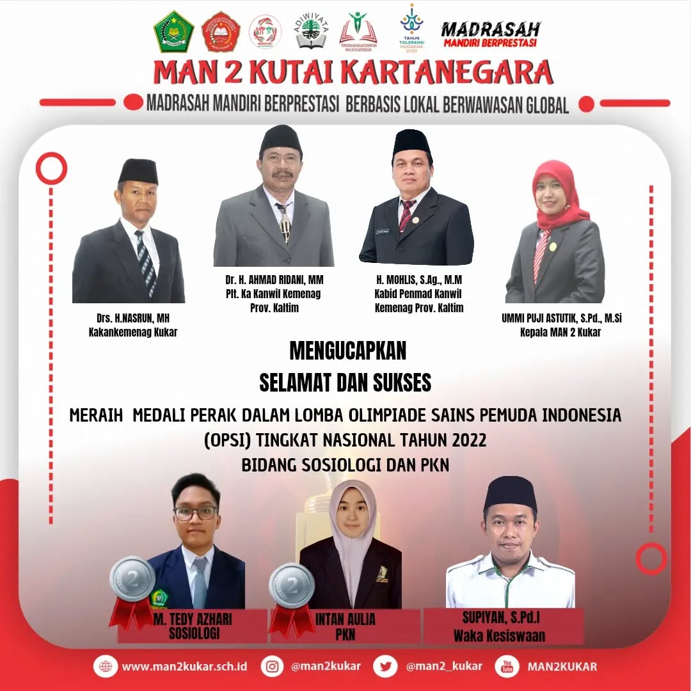
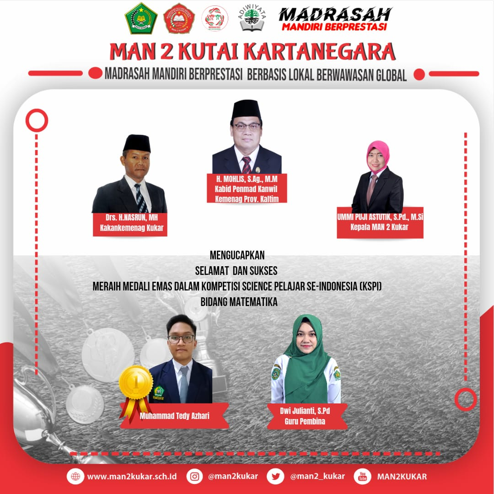
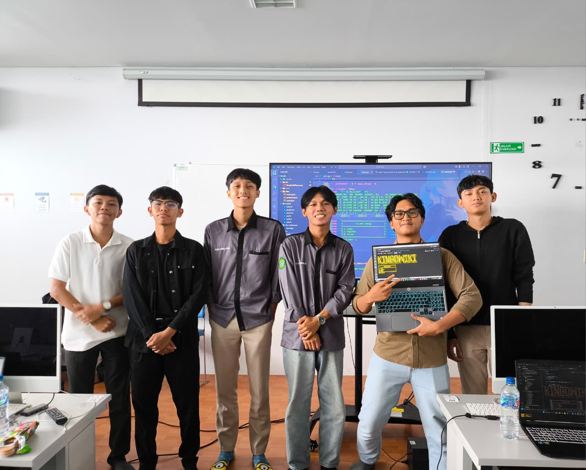
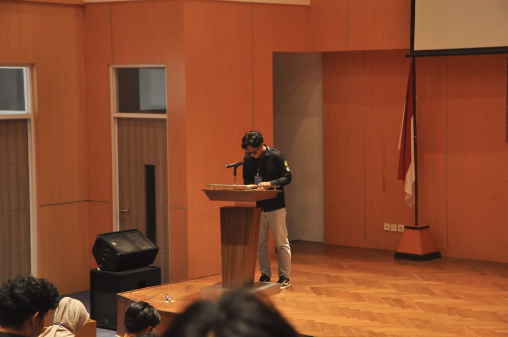

Halo! Nama saya M.TEDY AZHARI, biasanya dipanggil Tedy.
Saat ini saya kuliah semester 3 di Program Studi Informatika, Fakultas Teknik, Universitas Mulawarman.
Saya senang belajar hal baru, terutama di bidang teknologi.
Saat ini saya juga sedang berpartisipasi di Program Asah 2025 by Dicoding dengan fokus pada
Frontend dan Backend with AI.
Saya berharap dengan mengikuti program ini dapat menambah wawasan, relasi, serta keterampilan kerja sama tim
untuk mempersiapkan karier yang cerah di masa mendatang.
MAN 2 Kutai Kartanegara
2021 - 2024
Menempuh pendidikan menengah atas dan mulai mengembangkan minat di bidang sains dan teknologi. Aktif dalam berbagai olimpiade sains selama di sekolah.

Medali Perak Sosiologi

Medali Emas Matematika
Universitas Mulawarman
2024 - Sekarang
Menempuh pendidikan S1 di Program Studi Informatika, aktif dalam berbagai kegiatan akademik dan organisasi.
- HTML, CSS, JavaScripts
- Python, Machine Learning
- C, C++, Internet of Things
- Kegiatan organisasi
Dokumentasi Praktikum C++ dengan membuat CRUD sederhana di Laboratorium

Menjadi ketua panitia pada kegiatan AI Workshop 2025 dengan tema GitHub dalam Pengembangan Karier.

Association of Informatics (AI)
Staff Departemen KPSDM